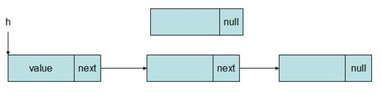
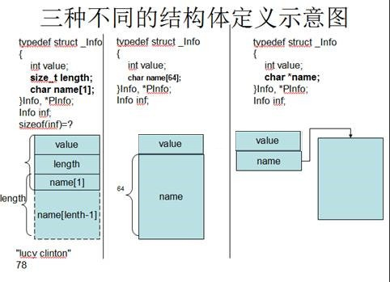
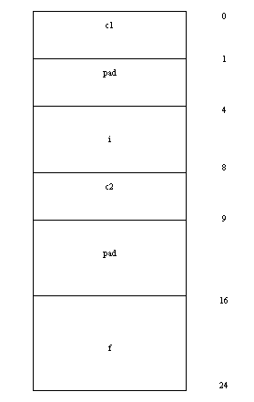
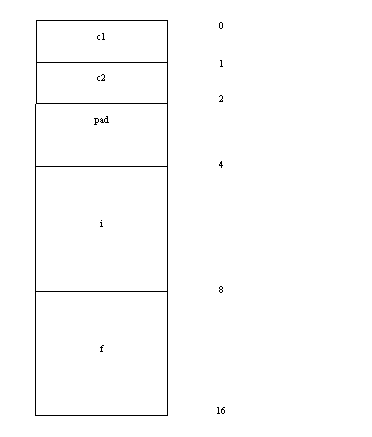

对于一组相同类型的数据，比如一个班上所有人的考试成绩，可以用数组来存放。但是，对于一组不同类型的数据，比如一个班上的学生的年龄，姓名，性别等，由于数据类型不一样，就不能仅仅通过数组来存放了。
于是，在C语言里，提供了一个叫struct(结构体)这样的一个新的数据类型。“结构”是一种构造类型，它是由若干“成员”组成的。 每一个成员可以是一个基本数据类型或者又是一个构造类型。
成员表由若干个成员组成， 每个成员都是该结构的一个组成部分。对每个成员也必须作类型说明，其形式为：
类型说明符 成员名;
成员名的命名应符合标识符的书写规定。例如：
struct student
{
int id;
int age;
char name[20];
char sex;
float score;
} ;
该结构定义了一个有关学生信息的一个结构体。其中学号为整型的id，年龄为整型的age，名字为char类型的字符数组，性别为一个char类型的字符sex，成绩则为一个float类型的score。他们共同组成了一个学生的信息。
定义一个结构的一般形式为如下几种：
1 struct 结构名
{
成员表列
};
struct 结构名 变量名;
比如：
struct S
{
int value;
char ch;
};
struct S s1;//此处利用结构体类型struct S定义了一个结构体的变量s1
2 struct 结构名
{
成员表列
}变量名1，变量名2;
比如：
struct S
{
int value;
char ch;
}s1,s2;//此处在定义结构体类型的时候，同时定义了2个结构体变量s1,s2
3 struct
{
成员表列
}变量名1，变量名2;
比如：
struct
{
int value;
char ch;
}s1,s2; // 此处定义了2个结构体类型变量s1和s2，但结构体的类型是匿名的，
// 因此这个结构体只能用来定义这2个结构体变量
4 typedef struct _结构名
{
成员表列
}结构名,*P结构名;
结构名 变量名;
比如：
typedef struct _S
{
int value;
char ch;
}S,*PS;
S s1;//这里定义了一个类型为S的结构体变量s1
PS s2;//这里定义了一个类型为PS的结构体指针s2，等价于：S *s2;即PS与S*是等价的。
第4种定义方法是结构体定义的主流定义方法。目前大多数程序库中对结构体的定义方法都是采用第4种定义的方法。
为了存放一个学生的个人信息，我们定义如下的结构体类型：
typedef struct _student
{
int id;
int age;
char name[20];
char sex;
float score;
}student,*pstudent ;
student s1 = {1001, 19, “tom”, ‘m’, 80.5};
上面是结构体的第一种初始化方法，直接把结构体各成员的值按照定义顺序和类型放在{}里，这样就自动为s1中的各个成员进行了初始化。
结构体的第二种初始化方法，对结构体中各个成员单独初始化：
student stu; stu.id = 1001; stu.age = 19; strcpy(stu.name, “tom”); stu.sex = ‘M’; stu.score = 99.5;
在第二种初始化的方法中，我们看到，定义了结构体变量之后，可以通过’.’运算符来访问结构体变量中的具体成员，比如：
stud.id就是在访问结构体变量stu中的id成员，其它与此类似。
结构体里是可以继续包含其它结构体成员的。比如，要表示一个学生的生日信息，就可以先定义一个日期的结构体如下：
typedef struct _date
{
int year;
int month;
int day;
}date,*pdate;
然后在学生的结构体里，包含日期这样一个结构体：
typedef struct _student
{
int id;
int age;
char sex;
char name[64];
float weight;
date birthday;
}student,*pstudent;
包含结构体成员的结构体初始化方式：
student s1={11,23,'M',"bush",65.5f,{1990,1,5}};
或者按照下面的方法初始化：
student s2;
s2.id=8;
s2.age=16;
strcpy_s(s2.name,"jerry");
s2.sex='M';
s2.weight=47.05f;
下面是对结构体中的日期结构体成员进行初始化：
s2.birthday.year=1991;
s2.birthday.month=2;
s2.birthday.day=5;
使用二级.运算符就可以访问结构体中的结构体成员了。
结构体中可以包含指针成员。一旦结构体中包含了指针成员，那么结构体的赋值运算就会变得复杂一些。请参考本章的10.5节的具体介绍。
typedef struct _student
{
int age;
char sex;
char *name;
}student,*pstudent;
上面的结构体中，name成员是一个字符指针，如果要利用name来表示一个人的名字信息，那么需要单独为name指定内存。
比如：
student s1={30,’M’,”tom”};
上面的定义与初始化结构体变量s1的时候，将s1.name指向了静态常量区中的”tom”字符串首地址。
student s2; s2.age=25; s2.sex=’F’; s2.name=(char *)malloc(16); strcpy_s(s2.name,16,”susan”);
上面再定义了结构体变量s2之后，为s2.name在堆上分配了16个字节的内存，然后把名字拷贝进内存。
结构体中的指针，可以指向同一个类型的结构体地址。比如下面的定义方法：
typedef struct _node
{
int value;
struct _node *next;
}node,*pnode;
按照这种定义方法，next指针指向了同样类型的结构体地址。这正是数据结构中链表结点的定义方法。
如下图所示，在链表中，链表的头结点中的next指针指向下一个结点，下一个结点中的next指针又指向下下一个结点，最后一个结点的next指针为NULL。这样，只要知道了链表的头结点，就可以将链表中的所有结点遍历一次。
结构体的定义中，经常会出现下面3种不同的成员定义方法：
第一种定义方法中，name[]是一个包含1个元素的字符数组，与length成员一起用来存放一个变长的数据，即在name后面还有length-1个字节的变长数据。此种结构体经常用于存放变长数据。
第二种定义方法中，name[]是一个64个元素的字符数组，因此name[]在结构体中占用的内存空间是定长的。此种结构体用来存放数据的时候，数据不能超过指定的长度，而且容易造成部分内存空间的浪费，
第三种定义方法中，name是一个字符指针，在结构体中占4个字节(X86)或者8个字节（X64），必须为name指定新的内存空间，才能保存相应的数据。
现在我们用3种结构体来存放”lucy Clinton”和78这2个数据，程序示例如下：
#include <string.h>
#include <malloc.h>
typedef struct _INFO1
{
int value;
size_t length;
char name[1];
}INFO1,*PINFO1;
typedef struct _INFO2
{
int value;
char name[64];
}INFO2,*PINFO2;
typedef struct _INFO3
{
int value;
char *name;
}INFO3,*PINFO3;
int _tmain(int argc, _TCHAR* argv[])
{
//计算变长空间大小
INFO1 *pi1 =(INFO1 *)malloc(sizeof(INFO1)+strlen("lucy cliton"));
if(pi1==NULL)
{
return -1;
}
memset(pi1,0,sizeof(INFO1)+strlen("lucy cliton"));
pi1->value=78;
pi1->length = strlen("lucy cliton")+1;
strcpy_s(pi1->name,pi1->length,"lucy cliton");
printf("value:%d,name:%s\n",pi1->value,pi1->name);
free(pi1);
pi1=NULL;
INFO2 *pi2 = (INFO2 *)malloc(sizeof(INFO2));
if(pi2==NULL)
{
return -1;
}
memset(pi2,0,sizeof(INFO2));
pi2->value = 78;
//因为name是定长的64个字节，在存放”lucy clinton”的时候
//有部分空间被浪费了。
strcpy_s(pi2->name,64,"lucy cliton");
printf("value:%d,name:%s\n",pi2->value,pi2->name);
free(pi2);
pi2 = NULL;
INFO3 *pi3 = (INFO3*)malloc(sizeof(INFO3));
if(pi3==NULL)
{
return -1;
}
memset(pi3,0,sizeof(INFO3));
pi3->value = 78;
//需要为name指定新的内存空间，这里从堆上分配
pi3->name = (char *)malloc(strlen("lucy cliton")+1);
if(pi3->name ==NULL)
{
free(pi3);
return -1;
}
memset(pi3->name,0,strlen("lucy cliton")+1);
strcpy_s(pi3->name,strlen("lucy cliton")+1,
"lucy cliton");
printf("value:%d,name:%s\n",pi3->value,pi3->name);
free(pi3->name);
free(pi3);
pi3=NULL;
return 0;
}
现在我们来研究下结构体赋值。首先，需要介绍下在进行数据拷贝与赋值的时候用到的深拷贝和浅拷贝。
所谓浅拷贝(shallow copy)是指在被拷贝的对象中有指针的情况下，只是将目标指针设置为被拷贝指针的值（地址），而不会为目标指针分配一个新的内存，并把数据从被拷贝指针所指的内存中拷贝到这个内存中来；而深拷贝(deep copy)，就是为目标指针申请一个新的内存，然后将数据从被拷贝指针所指的内存中拷贝到这个新申请的内存中来。采用深拷贝的情况下，释放内存的时候就不会出现在浅拷贝时重复释放同一内存的错误。
浅拷贝是系统默认的拷贝方法，而深拷贝需要程序员自己实现。
比如我们定义了2个结构体变量s1,s2。在s1和s2经过初始化之后，在程序运行期间，将s1的值直接赋值给s2：
student s1; student s2; … s2=s1;
这种赋值方式，是否合法呢？
这需要分不同的情况。如果结构体student中没有任何的指针或者数组，没有问题。但是如果有了指针或者数组，就会有问题了。比如说：
typdef struct _struct1
{
int a;
char b;
}struct1;
struct1 s1 = {1, ‘a’};
struct1 s2 = s1;
因为结构体中不包含指针和数组，那么这个赋值是没有任何问题的。但是，考虑下面的结构体定义：
typdef struct _struct2
{
int a;
char *p;
}struct2;
结构体中包含了一个指针成员p。那么试分析下面的代码：
struct2 s1; s1.a = 10; s1.p = (char *)malloc(100); strcpy_s(s1.p,100,”hello world”); struct1 s2 = s1; free(s1.p); s1.p=NULL;
这个时候s2.p所指向的内存已经在执行完free(s1.p)之后就被释放了，因此s2.p就是一个野指针了，因为它指向的指针内存已经被释放掉了。
由于C语言中在进行赋值的时候是浅拷贝，所以，将会使新的结构中的指针指向原来的结构中的同一个地址。一旦原来的结构释放，如果新的结构变量中再次释放，就会出问题。
在C++里重载=操作符并正确的处理了动态分配的内存的情况可以直接使用=号赋值。但C语言里面，一般不建议这样做。必须由程序员自己实现深拷贝：
struct2 s1;
s1.a = 10;
s1.p = (char *)malloc(100);
…
struct1 s2;
s2.a=s1.a;
s2.p=(char *)malloc(100);
memcpy(s2.p,s1.p,100);
free(s1.p);
…
这样即使执行了free(s1.p)之后，也不会对s2.p造成任何的影响。
下面来介绍如何使用指针来访问结构体以及结构体中的成员数据。先定义一个结构体类型如下表：
typedef struct _student
{
int id;
int age;
char name[20];
char sex;
float score;
} student, *pstudent;
再定义并初始化一个结构体变量s和结构体指针变量ps指向结构体变量s:
student s = {1,30,”tom”,’M’,59.5f};
student *ps=&s;
这个时候，可以使用ps和->运算符来访问结构体中的成员，比如：
printf(“id:%d,age:%d,name:%s,sex:%c,score:%f\n”, ps->id,ps->age,ps->name,ps->sex,ps->score);
我们也可以在堆上申请内存来存放结构体中的数据，比如：
student * pstdt = (student*)malloc(sizeof(student));
if(pstdt)
{
memset(pstdt, 0, sizeof(student));
pstdt->age = 19;
pstdt->id = 1001;
strcpy(pstdt->name, "tom");
pstdt->score = 99.5;
pstdt->sex = 'M';
printf("id:%d,age:%d,name:%s,sex:%c,score:%f\n",
pstdt->id, pstdt->age,pstdt->name,pstdt->sex,pstdt->score);
free(pstdt);
pstdt = NULL;
}
注意，需要再次强调的是，结构体指针在进行加减运算的时候，加减的步长是结构体单位长度的倍数。比如：
student *ps=&s; ps = ps + n;//n为某个整数
这里的n代表的不是n个字节，而是n个sizeof(student)的字节。也就是在完成上面的计算后，ps向前移动了n*sizeof(student)这么多个字节。
结构体数据与结构体指针是可以存放在数组中的。下面的代码演示了如何用数组来存放结构体数据与结构体指针。
typedef struct _student
{
int age;
char sex;
char name[20];
}student,*pstudent;
int _tmain(int argc, _TCHAR* argv[])
{
student *stu3[2];//结构体指针数组
student stus[3]={{25,'M',"tom"},{22,'F',"lucy"},{23,'M',"david"}};//结构体数组与初始化
student stu2[2];//结构体数组
//初始化结构体数组stu2
for(int i=0;i<2;i++)
{
printf("Please input the age,sex,name(<=20)\n");
fflush(stdin);
scanf_s("%d %c %s",&stu2[i].age,&stu2[i].sex,stu2[i].name,20);
}
//初始化结构体指针数组stu3
for(int i=0;i<2;i++)
{
stu3[i]=&stu2[i];
}
//遍历结构体指针数组stu3
for(int i=0;i<2;i++)
{
printf("stu3:age:%d,sex:%c,name:%s\n",
stu3[i]->age,stu3[i]->sex,stu3[i]->name);
}
printf("\n");
//遍历结构体数组stus
for(int i=0;i<3;i++)
{
printf("stus:age:%d,sex:%c,name:%s\n",
stus[i].age,stus[i].sex,stus[i].name);
}
printf("\n");
//遍历结构体数组stu2
for(int i=0;i<2;i++)
{
printf("stu2:age:%d,sex:%c,name:%s\n",
stu2[i].age,stu2[i].sex,stu2[i].name);
}
return 0;
}
当结构体变量做函数参数的时候，我们需要注意些什么呢？大家知道，将实参传递给函数的时候，有3种传递方式：传值，传指针，和传引用。
由于结构体数据成员一般都会多余1个，因此占用的内存一般都比较大，所以，在传值的时候，拷贝到栈上的数据（每个成员）就会很多，因此效率会比较低下。因此结构体传参，一般都不推荐使用传值而使用传指针或者传引用，如果传指针或者传引用，那么只需要拷贝4个字节的地址（X86平台）或者8个字节的地址（X64平台中64位程序）到栈上。
比如下面用于比较2个学生成绩是否相等的例子：
typedef struct _student
{
int score;
char name[20];
}student, *pstudent;
1，传值：
int compare_student_score1(student s1,student s2)
{
return s1.score-s2.score;
}
2，传指针：
int compare_student_score2(pstudent s1, pstudent s2)//pstudent==student *
{
if(s1==NULL || s2==NULL)
{
return 0;
}
return s1->score-s2->score;
}
int _tmain(int argc, _TCHAR* argv[])
{
student stu1={99,"tom"};
student stu2={97,"lily"};
//传值：
int result = compare_student_score1(stu1,stu2);//stu1,stu2的各个成员都会拷贝到栈上
if(result>0)
{
printf("%s is better than %s\n", stu1.name,stu2.name);
}
else if (result==0)
{
printf("%s is equal to %s\n", stu1.name,stu2.name);
}
else
{
printf("%s is worse than %s\n", stu1.name,stu2.name);
}
printf("stu1.score:%d\n", stu1.score);
//传指针
result = compare_student_score2(&stu1,&stu2);//只需要把stu1和stu2的地址拷贝到栈上
if(result>0)
{
printf("%s is better than %s\n", stu1.name,stu2.name);
}
else if (result==0)
{
printf("%s is equal to %s\n", stu1.name,stu2.name);
}
else
{
printf("%s is worse than %s\n", stu1.name,stu2.name);
}
return 0;
}
各种开发库中，结构体的定义是无处不在的。比如在Windows内核驱动开发的WDK库中，就有一个经常被使用的UNICODE_STRING结构体，它的定义如下：
typedef struct _UNICODE_STRING {
USHORT Length; //字节数，不是字符数
USHORT MaximumLength; //字节数，不是字符数
PWSTR Buffer;//非零结尾，中间也可能含有零
} UNICODE_STRING, *PUNICODE_STRING;
这个结构体定义了一种新的字符串表示方法，它不再是以’\0’结尾。而是用内存的起始地址Buffer和长度Length来表示字符串。
要正确计算sizeof（结构体）的大小，需要理解和掌握好数据对齐的概念。数据对齐分为自然对齐和强制对齐两种方式。
1．自然对齐：各个类型自然对齐，即其内存地址必须是其类型本身的整数倍。结构体对齐到其中成员最大长度类型的整数倍。计算机中内存空间按照字节划分，从理论上讲似乎对任何类型的变量的访问可以从任何地址开始，但实际情况是在访问特定类型变量的时候经常在特定的内存地址访问，这就需要各种类型数据按照一定的规则在空间上排列，而不是顺序的一个接一个的排放，这就是对齐。
各个硬件平台对存储空间的处理上有很大的不同。一些平台对某些特定类型的数据只能从某些特定地址开始存取。比如有些架构的CPU在访问一个没有进行对齐的变量的时候会发生错误，那么在这种架构下编程必须保证字节对齐。其他平台可能没有这种情况，但是最常见的是如果不按照适合其平台要求对数据存放进行对齐，会在存取效率上带来损失。比如有些平台每次读都是从偶地址开始，如果一个int型（假设为32位系统）如果存放在偶地址开始的地方，那么一个读周期就可以读出，而如果存放在奇地址开始的地方，就需要2个读周期，并对两次读出的结果的高低字节进行拼凑才能得到该数据。
无论如何，为了提高程序的性能，数据结构（尤其是栈）应该尽可能地在自然边界上对齐。原因在于，为了访问未对齐的内存，处理器需要作两次内存访问；然而，对齐的内存访问仅需要一次访问。
一个字或双字操作数跨越了4字节边界，或者一个四字操作数跨越了8字节边界，被认为是未对齐的，从而需要两次总线周期来访问内存。一个字起始地址是奇数但却没有跨越字边界被认为是对齐的，能够在一个总线周期中被访问。
某些操作双四字的指令需要内存操作数在自然边界上对齐。如果操作数没有对齐，这些指令将会产生一个通用保护异常（#GP）。双四字的自然边界是能够被16 整除的地址。其他的操作双四字的指令允许未对齐的访问（不会产生通用保护异常），然而，需要额外的内存总线周期来访问内存中未对齐的数据。
自然对齐应该遵守如下两条规则：
1）数据成员对齐规则：
在默认情况下，各成员变量存放的起始地址相对于结构的起始地址的偏移量:sizeof(它的基本类型)或其倍数。如果该成员为非基本成员，则为其子成员中最大的基本类型的整数倍。
2）整体对齐规则：
结构的总大小也有个约束条件：最大sizeof(基本类型)的整数倍
问题：一个C语言程序如下：
typedef struct _a
{
char c1;
long i;
char c2;
double f;
}a;
typedef struct _b
{
char c1;
char c2;
long i;
double f;
}b;
void main(void)
{
printf("Size of double, long, char = %d, %d, %d\n",
sizeof (double), sizeof (long), sizeof (char));
printf("Sizeof a, b = %d, %d\n", sizeof (a), sizeof (b));
}
该程序在SPARC/Solaris工作站上的运行结果如下：
sizeof of double, long, char = 8, 4, 1
sizeof of a, b = 24, 16
结构体类型a 和 b 的域都一样，仅次序不同，为什么它们需要的存储空间不一样？
分析：此题为中国科学院研究生入学考试题。考查了结构体自然对齐的规则。下面画出结构的存储图11。
图11结构体a自然对齐存储结构
如图11所示为结构体a在自然对齐后的存储结构，从图中可以看出：c1为char类型，占一个字节。之后为了让i自然对齐，因此必须填充3个字节。之后i为int类型，占4个字节。c2是char类型，占用1个字节。之后的f为double类型，为了让f对齐到8的整数倍地址必须填充7个字节。之后是f的存储大小占8个字节。所以，a的存储大小为：
sizeof(a)=1+3+4+1+7+8=24。
如图12所示为结构体b在自然对齐后的存储结构，从图中可以看出：c1占用1个字节，c2占用1个字节，为了让i自然对齐而填充2个字节，i占用了4个字节，f占用了8个字节。
图12 结构体b自然对齐结构
所以，b的存储大小为：
sizeof(b)=1+1+2+4+8=16。
2．强制对齐
除了自然对齐外，还有另外一种对齐方式：
#pragma pack(push) //保存对齐状态 #pragma pack(n) //定义结构对齐到n
定义结构
#pagman pack(pop)//恢复对齐状态
上面的预编译语句将定义的结构体强制对齐到n。#pragma pack(n)来设定变量以n字节对齐方式。强制对齐应该遵守如下两条对齐规则：
1）数据成员对齐规则：
n字节对齐就是说变量存放的起始地址的偏移量：min(sizeof(基本类型)，n)或其倍数。
2）整体对齐规则：
结构的总大小也有个约束条件：min(最大的sizeof(基本类型)，n)的倍数。
也就是说：
第一、如果 n 大于等于该变量所占用的字节数，那么偏移量必须满足默认的对齐方式；如果 n 小于该变量的类型所占用的字节数，那么偏移量为 n 的倍数，不用满足默认的对齐方式。
第二：结构的总大小也有个约束条件，分下面两种情况：如果 n 大于所有成员变量类型所占用的字节数，那么结构的总大小必须为占用空间最大的变量占用的空间数的倍数； 否则必须为 n 的倍数。
#pragma pack(8)
struct s1
{
short a;
long b;
};
struct s2
{
char c;
s1 d;
long long e;
};
struct s3
{
char c;
short a;
long b;
long long e;
};
#pragma pack()
1.sizeof(s1)=? sizeof(s2) = ? sizeof(s3) = ?
2.s2的c后面空了几个字节接着是d?
分析：此题为微软公司的一道笔试题，同样考查了关于结构对齐的规则。只不过这里不是自然对齐，而是用了#pragma pack()来规定了对齐的方式。
首先看s1。由于#pragma pack(8)要求8字节对齐，但s1中所有成员都比8小，所以各个成员只需要按照自然对齐即可，所以a占2个字节，b占4个字节，a后面需要补齐2字节，才能使long类型的b自然对齐。然后b占4个字节，因此整个s1结构共占用：2+2(pad)+4=8字节。
再看s2。c占1个字节，d为s1结构体成员，s1结构体成员根据对齐规则，按照其中最大成员long的4字节对齐，所以c之后需要补3字节才能让d达到4字节对齐。对于x86，long long数据类型为8字节，所以存完d后，需要在后面补4个字节，让e 8字节对齐。因此s2结构共占用：1+3(pad)+8+4(pad)+8=24。
最后看s3。c占1个字节，由于a为short类型，所以c之后需要填充1个字节，才能让a对齐。此时，b已经对齐，占4个字节。而e大小为8个字节，已经对齐。所以s3结构共占用：1+1(pad)+2+4+8=16。
答案：sizeof(s2) = 24，sizeof(s3) = 16。
那么在编程中如何处理字节对齐情况呢？如果在编程的时候要考虑节约空间的话，那么只需要假定结构的首地址是0，然后各个变量按照上面的原则进行排列即可，基本的原则就是把结构中的变量按照类型大小从小到大声明，尽量减少中间的填补空间。还有一种就是为了以空间换取时间的效率，显示的进行填补空间进行对齐，比如有一种使用空间换时间做法是显式的插入pad成员：
struct Demo
{
char a;
char pad[3]; //使用空间换时间
int b; //对齐到4的整数倍
}
pad成员对程序没有什么意义，它只是起到填补空间以达到字节对齐的目的，当然即使不加这个成员通常编译器也会自动填补对齐，自己加上它只是起到显式的提醒作用。
栈空间对齐：
typedef struct _s
{
char c1;
char c2;
short s1;
int x;
}S;
int main(int argc, char* argv[])
{
printf("Hello World!\n");
char c1 =0;
char c2 = 0;
short s1 = 0;
int x = 0;
float f = 0.0f;
double d = 0.0;
S s={0};
printf("c1:%p,c2:%p,s1:%p,x:%p, f:%p,d:%p\n",&c1,&c2,&s1,&x,&f,&d);
printf("sizeof s =%d\n", sizeof(s));
return 0;
}
C语言编程的时候，需要使几种不同类型的变量存放到同一段内存单元中。也就是使用覆盖技术，几个变量互相覆盖重叠。这种几个不同的变量共同占用一段内存的结构，在C语言中，被称作“共用体”类型结构，简称共用体，也叫联合体。
与结构体的定义形式类似，联合体的定义形式也分为如下几种：
union 共用体名
{
数据类型 成员名;
数据类型 成员名;
...
} 变量名;
union foo
{
char s[10];
int i;
}a,b;
union 共用体名
{
数据类型 成员名;
数据类型 成员名;
...
};
union 共用体名 变量名;
union foo
{
char s[10];
int i;
};
union foo a;
typedef union
{
数据类型 成员名;
数据类型 成员名;
...
}共用体名;
共用体名 变量名;
typedef union
{
char s[10];
int i;
}foo;
foo a;
与结构体定义类似，用得最多的联合体定义方式为：
typedef union _共用体名
{
数据类型 成员名;
数据类型 成员名;
...
}共用体名,*P共用体名;
共用体名 变量名;
比如：
typedef union _foo
{
char s[10];
int i;
}foo,*pfoo;
foo a;
在联合体定义与使用的时候，需要注意下面几点：
1. union中可以定义多个成员，union的大小由最大的成员的大小决定。
2. union成员共享同一块大小的内存，一次只能使用其中的一个成员。
3. 对某一个成员赋值，会覆盖其他成员的值，因为他们共享一块内存。
4. union中各个成员存储的起始地址都是相对于基地址的偏移都为0。
下面是联合体的使用示例：
typedef union _foo
{
char s[20];
int i;
}foo,*pfoo;
int main(void)
{
foo a;
a.i = 100;
printf(“a.i:%d, a.s:%s\n”, a.i, a.s);
strcpy(a.s, “hello world!”);
printf(“a.i:%d, a.s:%s\n”, a.i, a.s);
printf(“&a.i:%p,&a.s%p\n”, &a.i, &a.s);
printf(“sizeof(a)=%d\n”, sizeof(a));
return 0;
}
共用体和结构体是两种定义类似但又有本质区别的构造类型，那么它们究竟有哪些区别呢？
1..共用体和结构体都是由多个不同的数据类型成员组成，但在任何同一时刻，共用体只存放了一个被选中的成员，而结构体的所有成员都存在。
2. 对于共用体的不同成员赋值, 将会对其它成员重写, 原来成员的值就不存在了, 而对于结构体的不同成员赋值是互不影响的。
3．结构体里可以含有union成员，union里也可以含结构体成员。
typedef struct _mystruct
{
int a;
char c;
}mystruct;
mystruct ms;
ms.a = 100;
ms.c = ‘a’;
typedef union _myunion
{
int a;
char c;
}myunion;
myunion mu;
mu.a = 100;
mu.c = ‘a’;
联合体里包含结构体：
typedef union _Demo
{
int a;
struct
{
int b;
char c;
}s;
float f;
}Demo;
Demo demo;
Demo.a
Demo.f;
Demo.s.b;
Demo.s.c;
联合体里包含结构体：
typedef union _LARGE_INTEGER {
struct {
ULONG LowPart;
LONG HighPart;
} u;
LONGLONG QuadPart;
} LARGE_INTEGER;
u和QuadPart共享了一段内存。
LARGE_INTEGER a; a.QuadPart = 100i64; a.u.LowPart = 100; a.u.Highpart = 0;
//结构体中包含联合体例子：
typedef struct _demo
{
union
{
int a;
char b;
}c;
int d;
}demo;
demo dm;
dm.c.a = 10;
dm.c.b = ’a’;
dm.d = 20;
如何判断一个平台是低位优先存储还是高位优先存储（整数的存储见第2.5节）？
定义一个联合体，让char类型和int类型共享同一段内存空间，那么char类型的成员恰好就是整数的最低字节。
typedef union
{
char c;
int a;
} U;
而对于整数0x1存放在4个字节的空间中的时候，在低位优先系统中，最低地址的那一个字节的值为1，在高位优先系统中，最低地址的那一个子集的值为0。因此，有了下面的判断代码：
int is_integer_lower_store()
{
U u;
u.a = 1;
return u.c;
}
union中可以定义多个成员，union的大小由最大的成员的大小决定，并且必须是最大类型大小的整数倍。
比如：
typedef union
{
char s[10];
int i;
}foo;
foo a;
sizeof(a)的大小应该为12字节。这是因为，最大成员是s[10]，占10个字节，但是还必须是最大类型成员大小的整数倍，而最大的类型成员是i，所以必须补足2个字节，最终的大小就是12个字节。
在Windows开发库中，有一个联合体叫LARGE_INTEGER。它的定义如下：
typedef union _LARGE_INTEGER {
struct {
ULONG LowPart;
LONG HighPart;
} u;
LONGLONG QuadPart;
} LARGE_INTEGER;
u和QuadPart共享了一段内存。因此我们可以按照下面的方法来访问它：
LARGE_INTEGER a; a.QuadPart = 100i64;
或者：
a.u.LowPart = 100; a.u.Highpart = 0;
当一个变量的值被限于列出来的值的范围内，那么这个变量就可以被定义为一个枚举类型的变量。比如一个星期有7天，每一天，都是确定的；一年有12个月，每个月也都是确定的。假如用1个变量来表示一个星期的某一天，或者一年的某个月，用其它的类型都不是很恰当。于是C语言里就引入了一个枚举类型（enum）。
在“枚举”类型的定义中列举出所有可能的取值，被说明为该“枚举”类型的变量取值不能超过定义的范围。枚举类型是一种基本数据类型，而不是像struct这样的一种构造类型，因为它不能再分解为任何基本类型。
enum 枚举名
{
值1, //如果不额外指定则第一个标识等于整数0，后续依次加1
值2,
值3=7,//注意，值3的值不能被指定为0,1,否则会和值1，值2冲突
值4, //这个时候，值4的值是8
....
值n
};
enum 枚举名 变量名;
enum FRUIT
{
APPLE,
PEAR,
ORANGE,
PEACH,
GRAPE,
BANANA
};
enum FRUIT myfruit = PEACH;
typedef enum _WINVERSION
{
,
WIN2000,
WINXP,
VISTA,
WIN7,
WIN8
} WINVERSION;
WINVERSION winos = WIN8;
typedef enum _WEEKDAY
{
SUNDAY,
MONDAY,
TUESDAY,
WENSEDAY,
THURSDAY,
FRIDAY,
SATURDAY
}WEEKDAY;
WEEKDAY day = MONDAY;
printf(“sizeof(WEEKDAY) = %d\n”, sizeof(day));
注意：枚举变量的值，在定义的时候要全部给出，而且枚举值本身是一个常量，它的值不能被改变。比如：
SUNDAY = 2; //错误 WEEKDAY day = 1 //错误 WEEKDAY day = MONDAY //正确 WEEKDAY day = (WEEKDAY)1 //正确
在Windows的开发库中，很多函数的参数类型被定义成了枚举类型，比如下面这个枚举类型，就是在Windows中进行文件操作时候定义的一个枚举类型：
typedef enum _FILE_INFORMATION_CLASS
{
FileDirectoryInformation = 1,
FileFullDirectoryInformation,
FileBothDirectoryInformation,
FileBasicInformation,
FileStandardInformation,
…
} FILE_INFORMATION_CLASS, *PFILE_INFORMATION_CLASS;
所谓“位域”是把一个字节中的二进制位划分为几个不同的区域， 并说明每个区域的位数。每个域有一个域名，允许在程序中按域名进行操作。 这样就可以把几个不同的对象用一个字节的二进制位域来表示。位域的定义形式为：
struct 位域结构名
{
位域列表
};
例如：
typedef struct _Demo
{
int a:4;
int b:4;
int c:2;
}Demo;
其中位域a占4位，位域b占4位，位域c占2位。
下面来介绍一下位域的定义以及使用方法。位域其实和结构体很类似。有的时候，位域本身就定义在一个结构体中。
void main(void)
{
struct bs
{
unsigned a:1;
unsigned b:3;
unsigned c:4;
} bit,*pbit;
bit.a=1;
bit.b=7;
bit.c=15;
printf("%d,%d,%d\n",bit.a,bit.b,bit.c);
pbit=&bit;
pbit->a=0;
pbit->b&=3;
pbit->c|=1;
printf("%d,%d,%d\n",pbit->a,pbit->b,pbit->c);
}
那么定义位域需要注意些什么呢？定义位域需要注意以下几点：
1．一个位域必须存储在同一个字节中，不能跨两个字节。如一个字节所剩空间不够存放另一位域时，应从下一单元起存放该位域。也可以有意使某位域从下一单元开始。例如：
struct demo
{
unsigned a:4
unsigned :0 /*空域*/
unsigned b:8 /*从下一单元开始存放*/
unsigned c:4
}
在这个位域定义中，a占第一字节的4位，后4位填0表示不使用，b从第二字节开始，占用8位，c占用4位。
2．由于位域不允许跨两个字节，因此位域的长度不能大于一个字节的长度。
3．位域可以无位域名，这时它只用来作填充或调整位置。无名的位域是不能使用的。 例如：
struct demo
{
int a:1
int :2 /*该2位不能使用*/
int b:3
int c:2
};
从以上分析可以看出，位域在本质上就是一种结构类型，不过其成员是按位（bit）分配的。
下面来分析一下位域结构的大小与对齐问题。如果结构体中含有位域，那么其准则是：
1．如果相邻位域字段的类型相同，且其位宽之和小于类型的sizeof(类型)大小，则后面的字段将紧邻前一个字段存储，直到不能容纳为止；
2．如果相邻位域字段的类型相同，但其位宽之和大于类型的sizeof大小，则后面的字段将从新的存储单元开始，其偏移量为其类型大小的整数倍；
3．如果相邻的位域字段的类型不同，则各编译器的具体实现有差异，VC6采取不压缩方式，即不同位域字段存放在不同的位域类型字节中；而GCC和DEV-C++都采取压缩方式。
问题：试分析下面结构的大小：
struct demo1
{
int i: 8;
int j: 4;
int a: 3;
double b;
};
struct demo2
{
int i: 8;
int j: 4;
double b;
int a:3;
};
struct demo3
{
char a:1;
char :2;
long b:3;
char c:2;
};
struct demo4
{
char a:1;
char :2;
char b:3;
long c:2;
};
struct demo5
{
char a:1;
char :2;
char b:3;
char c:2;
};
对于结构demo1：i，j，a三个位域之和为15bit，小于sizeof(int)=4*8=32bit，所以根据规则1：i，j，a紧邻存储在一起，共占用4个字节。b为double类型，占用8个字节，根据对齐规则，b必须存储在8的整数倍地址处。于是，在存储了i，j，a之后，将填充4个字节，再存储b。于是：
sizeof(demo1) = 4（i，j，a的长度之和）+4（填充的长度）+8（b的长度）=16
对于结构demo2：位域i，j之和小于32bit，根据规则1，它们将紧邻存储在一起，共占用4个字节。紧接着由于b为double类型，长度为8个字节，于是在i，j之后先填充4个字节，再存储b的8个字节。再接着存储位域a，4个字节。整个结构体应该按照其中最大成员b对齐，即必须是8的整数倍。于是：
sizeof(demo2) = 4（i，j的长度）+4（填充长度）+8（b的长度）+4（a的长度）+4（填充长度）=24
同理对于结构demo3，demo4，demo5：
sizeof(demo3) = 1（a和无名位域的长度）+3（填充长度）+4（b的长度）+1（c的长度）+3（填充长度）=12
sizeof(demo4) = 1（a，无名位域，和b的长度）+3（填充长度）+4（c的长度）=8
sizeof(demo5) = 1（位域a，b，c与无名位域之和，根据规则1，它们类型一致，且和小于8bit，所以紧邻存储）
在TCP/IP协议中，定义ip头和tcp头等的时候，就涉及到了对位域的使用，如下图所示：
本页共1085段，23849个字符，40712 Byte(字节)